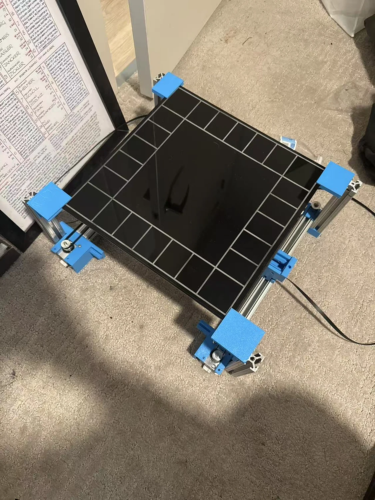
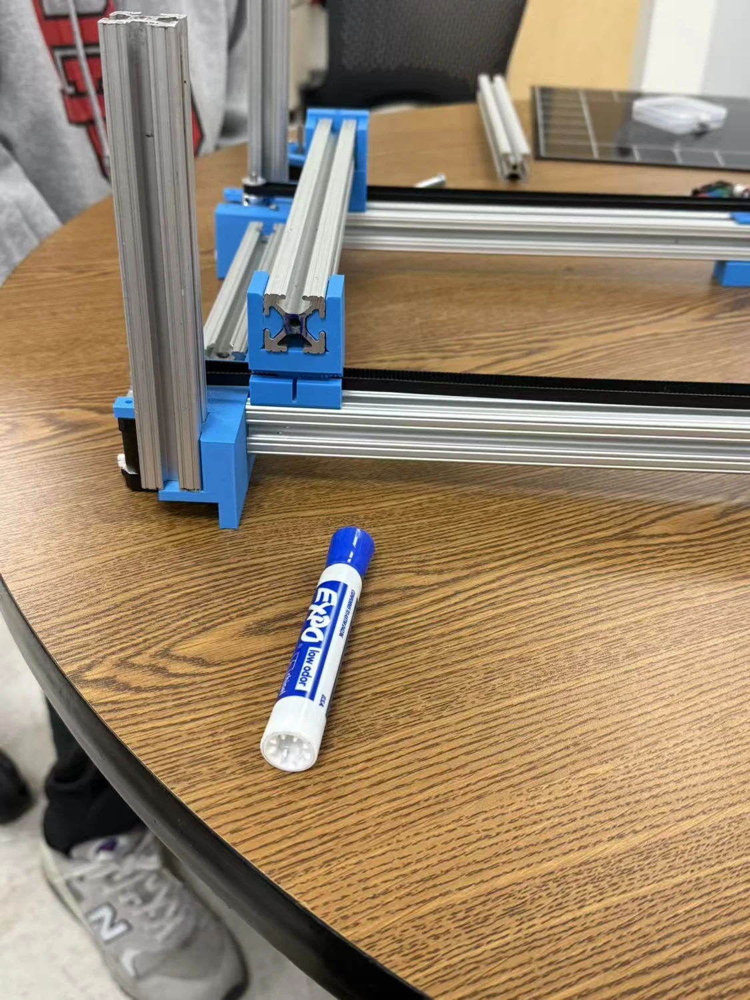

The Assignment
The ME360 brief required a small, lightweight 2.5-DOF system with an end-effector work area of at least 2.5 in by 2.5 in. The platform also had to be suitable for backpack transport and assemble by one person within ten minutes.
ME360 // ELECTROMECHANICAL DESIGN // TEAM PROTOTYPE
A portable automated game-board platform built around aluminum-extrusion guides, belt-driven linear motion, and 3D-printed fixtures for coordinated planar movement.

PROJECT TYPE
Team prototypeCOURSE
ME360 / Spring 2025MY ROLE
Team lead, per resumeAPPLICATION
Automated game boardMotion-system objective
Belt-driven linear stages
Required work-area width
Team-size brief
Required one-person assembly time
Supplied prototype evidence
01 // DESIGN BRIEF
The ME360 brief required a small, lightweight 2.5-DOF system with an end-effector work area of at least 2.5 in by 2.5 in. The platform also had to be suitable for backpack transport and assemble by one person within ten minutes.
The photographed prototype uses an aluminum-extrusion structure, visible timing-belt motion transmission, and blue 3D-printed brackets to support an automated board-game application described in my resume.
02 // DEVELOPMENT PROCESS
Translate the 2.5-DOF course brief into a compact automated game-board mechanism.
Arrange aluminum extrusion as both structural frame and linear-guide architecture.
Use printed brackets and stage supports to locate motion hardware and board elements.
Combine belt-driven axes and stepper-driven motion into the physical platform.
Use G-code motion sequences, documented in my resume, for automated positioning.
03 // PHYSICAL PROTOTYPE


04 // DEMONSTRATION MEDIA
05 // EVIDENCE & SCOPE
VISIBLE BUILD EVIDENCE
Supplied photographs document a built platform using extrusion rails, belts, pulleys, a board surface, and printed fixtures rather than a conceptual-only design.
REQUIREMENTS BASIS
The work-area and assembly-time numbers shown above are requirements in the ME360 assignment sheet; the provided files do not quantify measured compliance.
DOCUMENTATION LIMIT
The submitted evidence demonstrates construction and includes a motion video, but it does not provide accuracy, repeatability, payload, or endurance test data.
SOURCE MATERIAL
Project context and requirements are taken from the supplied Assignment 3 - Cartesian motion system brief for ME360. Physical prototype visuals and demonstration footage are user-supplied media. The team-lead, three belt-drive stage, 3D-printing, and G-code descriptions are drawn from my resume.